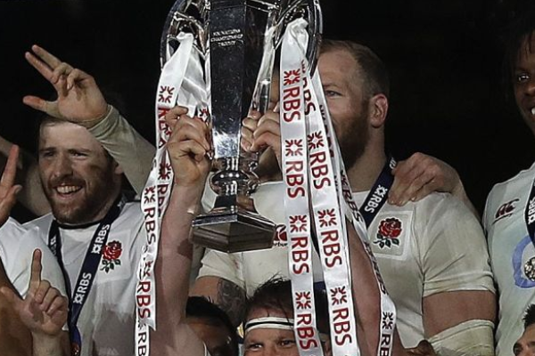

Vitoria do New England
O New England Free Jacks conquistou o tricampeonato da Major League Rugby (MLR) neste sábado, ao derrotar o Seattle Seawolves em uma final eletrizante diante de uma arena lotada em Boston. A vitória consolida a franquia de Quincy como a força mais dominante do rúgbi norte-americano na atualidade, coroando uma campanha impecável na temporada de 2026.
O triunfo foi selado nos minutos finais com um try espetacular convertido sob chuva, garantindo o placar apertado e explodindo a torcida local em festa. O título de 2026 carimba de vez a dinastia dos Free Jacks na liga, deixando os rivais da Costa Oeste mais uma vez com o vice-campeonato.
Por Peter Ratzke
Analista de Rúgbi e Correspondente Esportivo

BOSTON — Eles avisaram que o Leste continuaria pintado de azul e vermelho. Em uma tarde cinzenta que testou não apenas a tática, mas a alma dos jogadores, o New England Free Jacks bateu o Seattle Seawolves por 27 a 24 e ergueu o cobiçado Shield da Major League Rugby de 2026. Foi uma partida que entrou instantaneamente para a história da MLR como a definição perfeita de resiliência e dominância territorial.
Desde o apito inicial, ficou claro que a estratégia do técnico dos Free Jacks era sufocar a linha de ganho de Seattle. A batalha dos forwards foi brutal. O scrum de New England, liderado por uma primeira linha inspirada, conseguiu desestabilizar a icônica defesa dos Seawolves logo nos primeiros vinte minutos, abrindo espaço para que os donos da casa ditassem o ritmo do jogo.
O grande momento da partida, no entanto, veio aos 74 minutos. Com o placar em desvantagem de 24 a 20 e o cansaço cobrando seu preço, o abertura dos Free Jacks flutuou uma bola precisa na ponta esquerda. O ponta correu contra o vento, quebrou dois tackles na linha de vinte e dois metros e mergulhou no in-goal, cravando o try da virada. A conversão subsequente foi um mero detalhe perto da catarse coletiva que tomou conta das arquibancadas.
Seattle ainda tentou uma última carga nos acréscimos, apostando no jogo de fases e nos erros de disciplina de New England. Mas a defesa dos Free Jacks postou-se como uma parede intransponível, forçando um knock-on decisivo que encerrou o confronto.
Com este resultado, o New England Free Jacks não apenas levanta mais um troféu, mas crava seu nome na história do esporte nos Estados Unidos com três títulos consecutivos. Para os críticos que questionavam a profundidade do elenco no início do campeonato, a resposta veio em forma de uma exibição impecável de rúgbi moderno. A taça fica em Boston, e o império dos Free Jacks na MLR parece longe de terminar.